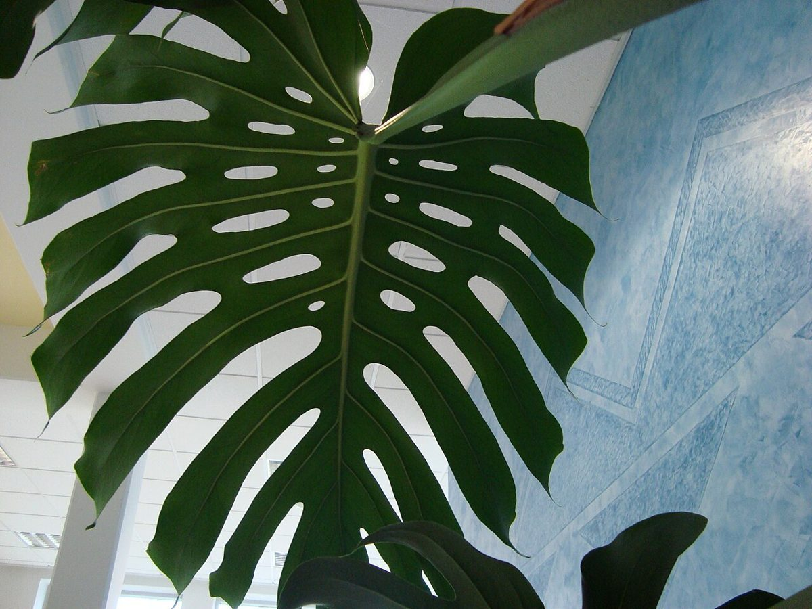
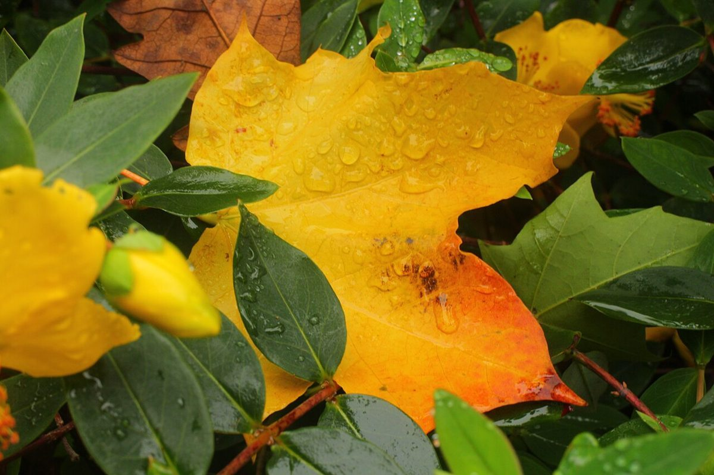

店のこと
店のこと
お店について確認できているのは、所在地とInstagramのアカウントだけです。
このページの「想像してみる」部分は、制作側が想像して書いたものです。お店の実際の様子・考え・メニューとは関係がありません。
確認できていること
- 店名は「minamo」、業種はカフェ
- 所在地は茨城県日立市小木津町５丁目１５−１３(〒319-1413)
- 電話番号はなし。連絡はInstagramから
- 営業時間・定休日・メニュー・価格・ご予約・駐車場は準備中

想像してみる
どんなお店だろう
お店の様子は何も分かっていません。制作側は、これからInstagramでゆっくり知っていけたらいいな、と考えています。写真は、このページの色合いに合わせた葉っぱのイメージです(実際のお店の姿ではありません)。


